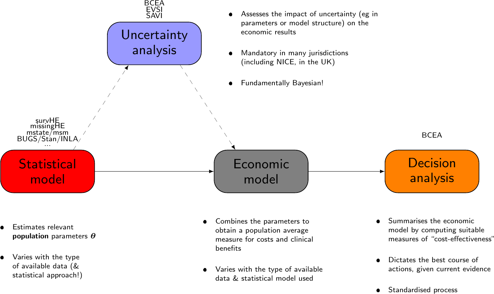

Introduction to R for Health Economics using BCEA
Gianluca Baio
Department of Statistical Science | University College London
g.baio@ucl.ac.uk
https://gianluca.statistica.it
https://egon.stats.ucl.ac.uk/research/statistics-health-economics
https://github.com/giabaio
https://github.com/StatisticsHealthEconomics
@gianlubaio
Health Economic Modeling in R: A Hands-on Introduction
ISPOR Europe 2022, Vienna, Austria
6 November 2022
Check out our departmental podcast “Random Talks” on Soundcloud!
Follow our departmental social media accounts
Disclaimer
Best opening sentence #ISPOREurope from Gianluca Baio: “statisticians should rule the world and Bayesian statisticians should rule all statisticians” https://t.co/GN2w7liAcR
— Manuela Joore (@ManuelaJoore) November 4, 2019
‚ĶJust so you know what you‚Äôre about to get into‚Ķ üòâ
Can also play with absolute placement of text/elements using native css…
Health technology assessment (HTA)
Objective: Combine costs and benefits of a given intervention into a rational scheme for allocating resources


Health technology assessment (HTA)
For each module, we may need/use different/specific packages! (the “R-HTA-verse”?)


R & HTA
What is R?
Ris a very powerful statistical software- Specifically designed for statistical analysis
- Very large community of contributors – basically you can find code/packages to do any statistical analysis you need
- Open source and free
R & HTA
What is R?
Ris a very powerful statistical software- Specifically designed for statistical analysis
- Very large community of contributors – basically you can find code/packages to do any statistical analysis you need
- Open source and free
Why use R?
Everything can be (and almost invariably is) scripted
This helps with:
- Reproducibility
- Sharing your work with colleagues
- Reusing templates for “similar” projects
- “Transparency”!
Fantastic graphical capability
Generally fit for purpose
- You need advanced tools for many (most??) of the models you do…
But…
“Transparency is in the eye of the beholder”
(Andy Briggs at the R-HTA workshop – October 2020)
There is an entry cost
And more importantly, the effort goes hand in hand with sophistication in the statistical modelling associated with the economic evaluation!
Fun with colours & spaces
With a subtitle
This shows how to use colours in the slides. A bunch are pre-defined in the .css file and can be used simply as:
- The predictive distribution can be computed as follows.
More can be created by simply modifying the .css file to add more HEX codes.
For example use
{css} .uclblue { color: #002855; }(though this colour is already defined)
The default is in
assets/css/styles.csstemplate or create new ones…
Can add vertical space using the command
where XXX is a suitable unit, eg "20px".
Some maths
We can also include maths, using standard \(\rm\LaTeX\):
\[\class{myblue}{p(y\mid\mathcal{D}) = \int p(y\mid\bm\theta)p(\boldsymbol\theta\mid\mathcal{D})d\boldsymbol\theta} \]
To use colours with \(\rm\LaTeX\), needs a little hack: $\class{color}{expression}$
You can define a probabilistic assumption as \[y \mid \bm\theta \sim \dpois(\bm\theta) \] but in line it would look like this \(\color{MidnightBlue}{y\sim \dnorm(\mu,\sigma^2)}\) or \(y\sim \dt(\mu,\sigma^2)\)
These use the predefined \(\rm\LaTeX\) macros, saved in the file assets/macros/latex_macros.html. More can be (re)defined by simply adding to the file, which gets pre-loaded at the beginning of the resulting .html output
For instance, the command $\dnorm$ translates to the text Normal (typeset in the current font)
Some maths
In case you have more text with the same title and don’t want to increase the slide counter… (just add {visibility="uncounted"} to the slide title)
- Similarly, just adding
{visibility="hidden"}to the slide title makes it hidden
- Fontawesome works using
shortcodes, for example
[{{< fa smile >}}]{.red65blue}renders as
- Other utilities (eg from
ai) can be included using pureHTML, eg
<i class="ai ai-pubmed"></i>produces
Other LaTeX stuff
There’s also a file assets/macros/latex_colours.tex, which can be used in LaTeX chunks, eg
\input{assets/macros/latex_colours.tex}
\begin{center}
\begin{tikzpicture}
...
- This would be an
{r}chunk with header like this:
{r}
#| engine: "tikz"
#| echo: false
#| opts: list(width="85%",title="INSERT TEXT HERE")Then all the colours and, possibly other advanced LaTeX macro defined in
assets/macros/latex_colours.texare accessible bytikzchunksBut also, the “extension”
"color.js"(loaded inassets/macros/latex_colours.tex) enables semi-standard LaTeX colouringFor example
$\displaystyle \color{olive} x^2=\frac{d}{dx}f(x)$renders as \(\displaystyle \color{olive} x^2=\frac{d}{dx}f(x)\), which essentially looks the same as when using$\class{color}{math formula}$or even[math formula]{.color}(assumingcoloris defined!)
Numbered lists & references
- This is a bullet list and \(\class{spanish-yellow}{\theta \sim \dgamma(\alpha,\beta)}\) (Baio, 2012)
- Test
- And another
- With a numbered item (Baio, 2020)
- And another
- With more items
Can reset the counter of a list
<ol style="counter-reset: fancy-counter 9;">
<li>Number Ten</li>
<li>Number Eleven</li>
</ol>which renders as
- Number Ten
- Number Eleven
A page with left & right columns
Some content here
| Name | Sex |
|---|---|
| Gianluca | Male |
| Marta | Female |
| Kobi | Male |
| Anna | Female |
Just a test to see what happens here even if the text is really long
Or panelsets
| mpg | cyl | disp | hp | drat | wt | qsec | vs | am | gear | carb | |
|---|---|---|---|---|---|---|---|---|---|---|---|
| Mazda RX4 | 21.0 | 6 | 160.0 | 110 | 3.90 | 2.620 | 16.46 | 0 | 1 | 4 | 4 |
| Mazda RX4 Wag | 21.0 | 6 | 160.0 | 110 | 3.90 | 2.875 | 17.02 | 0 | 1 | 4 | 4 |
| Datsun 710 | 22.8 | 4 | 108.0 | 93 | 3.85 | 2.320 | 18.61 | 1 | 1 | 4 | 1 |
| Hornet 4 Drive | 21.4 | 6 | 258.0 | 110 | 3.08 | 3.215 | 19.44 | 1 | 0 | 3 | 1 |
| Hornet Sportabout | 18.7 | 8 | 360.0 | 175 | 3.15 | 3.440 | 17.02 | 0 | 0 | 3 | 2 |
| Valiant | 18.1 | 6 | 225.0 | 105 | 2.76 | 3.460 | 20.22 | 1 | 0 | 3 | 1 |
| Duster 360 | 14.3 | 8 | 360.0 | 245 | 3.21 | 3.570 | 15.84 | 0 | 0 | 3 | 4 |
| Merc 240D | 24.4 | 4 | 146.7 | 62 | 3.69 | 3.190 | 20.00 | 1 | 0 | 4 | 2 |
| Merc 230 | 22.8 | 4 | 140.8 | 95 | 3.92 | 3.150 | 22.90 | 1 | 0 | 4 | 2 |
| Merc 280 | 19.2 | 6 | 167.6 | 123 | 3.92 | 3.440 | 18.30 | 1 | 0 | 4 | 4 |
| Merc 280C | 17.8 | 6 | 167.6 | 123 | 3.92 | 3.440 | 18.90 | 1 | 0 | 4 | 4 |
| Merc 450SE | 16.4 | 8 | 275.8 | 180 | 3.07 | 4.070 | 17.40 | 0 | 0 | 3 | 3 |
| Merc 450SL | 17.3 | 8 | 275.8 | 180 | 3.07 | 3.730 | 17.60 | 0 | 0 | 3 | 3 |
| Merc 450SLC | 15.2 | 8 | 275.8 | 180 | 3.07 | 3.780 | 18.00 | 0 | 0 | 3 | 3 |
| Cadillac Fleetwood | 10.4 | 8 | 472.0 | 205 | 2.93 | 5.250 | 17.98 | 0 | 0 | 3 | 4 |
| Lincoln Continental | 10.4 | 8 | 460.0 | 215 | 3.00 | 5.424 | 17.82 | 0 | 0 | 3 | 4 |
| Chrysler Imperial | 14.7 | 8 | 440.0 | 230 | 3.23 | 5.345 | 17.42 | 0 | 0 | 3 | 4 |
| Fiat 128 | 32.4 | 4 | 78.7 | 66 | 4.08 | 2.200 | 19.47 | 1 | 1 | 4 | 1 |
| Honda Civic | 30.4 | 4 | 75.7 | 52 | 4.93 | 1.615 | 18.52 | 1 | 1 | 4 | 2 |
| Toyota Corolla | 33.9 | 4 | 71.1 | 65 | 4.22 | 1.835 | 19.90 | 1 | 1 | 4 | 1 |
| Toyota Corona | 21.5 | 4 | 120.1 | 97 | 3.70 | 2.465 | 20.01 | 1 | 0 | 3 | 1 |
| Dodge Challenger | 15.5 | 8 | 318.0 | 150 | 2.76 | 3.520 | 16.87 | 0 | 0 | 3 | 2 |
| AMC Javelin | 15.2 | 8 | 304.0 | 150 | 3.15 | 3.435 | 17.30 | 0 | 0 | 3 | 2 |
| Camaro Z28 | 13.3 | 8 | 350.0 | 245 | 3.73 | 3.840 | 15.41 | 0 | 0 | 3 | 4 |
| Pontiac Firebird | 19.2 | 8 | 400.0 | 175 | 3.08 | 3.845 | 17.05 | 0 | 0 | 3 | 2 |
| Fiat X1-9 | 27.3 | 4 | 79.0 | 66 | 4.08 | 1.935 | 18.90 | 1 | 1 | 4 | 1 |
| Porsche 914-2 | 26.0 | 4 | 120.3 | 91 | 4.43 | 2.140 | 16.70 | 0 | 1 | 5 | 2 |
| Lotus Europa | 30.4 | 4 | 95.1 | 113 | 3.77 | 1.513 | 16.90 | 1 | 1 | 5 | 2 |
| Ford Pantera L | 15.8 | 8 | 351.0 | 264 | 4.22 | 3.170 | 14.50 | 0 | 1 | 5 | 4 |
| Ferrari Dino | 19.7 | 6 | 145.0 | 175 | 3.62 | 2.770 | 15.50 | 0 | 1 | 5 | 6 |
| Maserati Bora | 15.0 | 8 | 301.0 | 335 | 3.54 | 3.570 | 14.60 | 0 | 1 | 5 | 8 |
| Volvo 142E | 21.4 | 4 | 121.0 | 109 | 4.11 | 2.780 | 18.60 | 1 | 1 | 4 | 2 |
Learn more: Tabsets
More on graphs
The file
assets/setup.Rcontains a bunch ofRcommands to create functions and shortcuts that can be used with the normalqmdcodeAlso, it contains some extra functions and customisation to tell
knitrhow to process theqmdfile- Specifically, in order to create an “alternative text”, it uses a trick
- This essentially means that the width of any graph created by
Ris controlled by the extra “chunk” option
{r} #| eval: false #| echo: true opts=list(...)which contains various elements
{r} #| eval: false #| echo: true opts=list( width="X%", title="SOME TEXT", alt="SOME TEXT", ... )titlewill produce the actual “alt text”, whilealtwill simply add some text to thehtmlfile (that can be read out for accessibility)
References
© Gianluca Baio (UCL) | | Intro to R in HTA & BCEA | ISPOR Europe 2022 | 6 Nov 2022